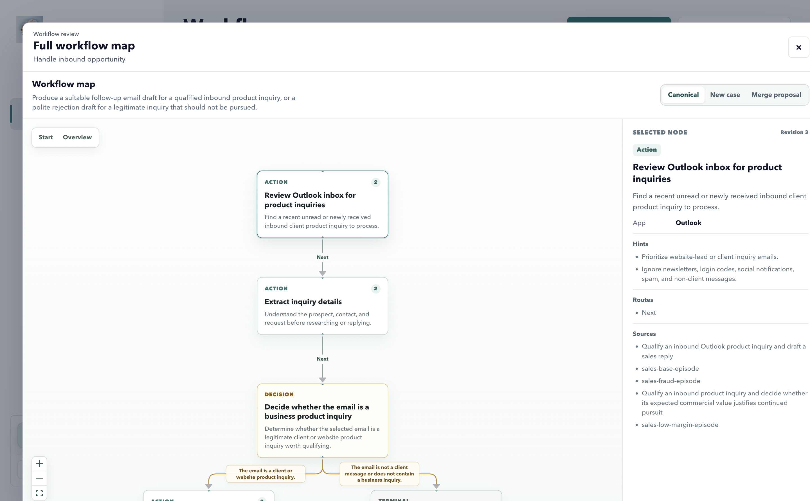

OysterWorkflow
01 / 05
一次真实执行One real execution
第一次录制，只看见一条路径。 The first recording reveals one path.
系统先把具体操作压缩成可复用的语义节点。 The system compresses concrete actions into reusable semantic nodes.
这不是完整规则，只是第一份证据。
This is evidence, not the complete policy.
Action
阅读客户询盘Review inbound inquiry
提取发送者与需求Extract sender and request context
Decision
判断是否真实可信Decide whether it is legitimate
Action
评估需求与可行性Evaluate request and feasibility
Terminal
回复草稿已保存Reply draft saved
OysterWorkflow
02 / 05
新的真实 CaseA new real case
这一次，判断结果不同。 This time, the judgment changes.
相同的判断节点被复用，但旧图没有对应的结束路线。 The same decision is reused, but the existing graph lacks the observed exit.
Candidate 只提出缺失部分，不重写整张图。
The candidate proposes the missing route, not a replacement
graph.
新邮件：域名可疑，请求模糊New email: suspicious domain and vague request
NEW CASE
Action
阅读客户询盘Review inbound inquiry
Decision
判断是否真实可信Decide whether it is legitimate
Action
继续评估需求Continue request evaluation
Candidate terminal
欺诈邮件，停止处理Fraudulent email, stop
只来自本次新证据Grounded in the new case
判断为欺诈Fraudulent
OysterWorkflow
03 / 05
复用已有判断，只增加真实的新路线。Reuse the judgment. Add only the observed route.
Call 4 找到 Workflow Family，Call 5 提出完整 Merge Proposal，代码再校验并应用。Call 4 finds the family. Call 5 proposes the merge. Code validates before apply.
New case candidate2 nodes
判断是否真实可信Decide legitimacy
映射到已有节点Maps to an existing node
欺诈邮件，停止Fraudulent, stop
图中没有，需要新增Missing from the graph
reuse
add
Canonical graphRevision 2
阅读客户询盘Review inquiry
Action
判断是否真实可信Decide legitimacy
现在拥有两条已知路线Now has two known routes
继续评估Continue
Action
欺诈停止Fraud stop
Terminal
OysterWorkflow
04 / 05
每一次不同的处理，都让图更接近真实工作。Each different outcome makes the graph closer to real work.
Action
阅读并验证询盘Review and verify inquiry
Decision
是否真实可信Is it legitimate?
Terminal
欺诈，停止Fraud, stop
Wait
等待工程确认Wait for engineering
Decision
是否值得继续Is it worth pursuing?
Terminal
礼貌回拒Polite rejection
Terminal
推进合作Advance opportunity
稳定节点被复用Stable nodes are reused
新 case 不会复制整条旧流程。A new case does not duplicate the old workflow.
差异成为路线Differences become routes
欺诈、低价值、等待和恢复都得到明确位置。Fraud, low value, waiting, and recovery gain explicit
positions.
每次修改都有 RevisionEvery change has a revision
运行中的 Agent
固定使用一个版本，不被新学习静默改变。An active run stays pinned to one graph revision.
OysterWorkflow
05 / 05
从学习到执行From learning to execution
图最终成为 Agent 的工作控制面。The graph becomes the Agent's work control plane.
Graph
决定当前节点与合法路线Defines the current node and legal routes
Runtime
保存状态、验证结果、暂停与恢复Stores state, validates, pauses, and resumes
Agent
在节点目标内自主完成具体操作Acts autonomously inside the node objective

下一层：Graph Runner 按节点调度 Agent。当前产品已把
Canonical Graph 打包给 Agent 阅读，但 Runtime
逐节点控制仍是下一步。
Next layer: Graph Runner schedules the Agent node by node.
Canonical Graph packaging exists today; Runtime enforcement
is the next step.